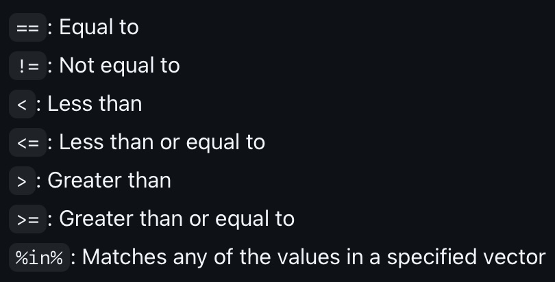

In this tutorial, we will learn how to clean data using the dplyr package. dplyr is a powerful package for data manipulation in R. It provides a consistent set of functions for working with data frames and tibbles.
Some of the key functions in dplyr include:
chaining operations with the %>% (piping) operator
filter(): Filter rows based on conditions
mutate(): Create new columns
select(): Select columns
arrange(): Arrange rows
group_by(): Group data
summarize(): Summarize data
We will work through several examples of these commands. Let’s revisit the mtcars dataset that we used earlier. This data set has information about various car models, including miles per gallon (mpg), number of cylinders (cyl), and horsepower (hp). This gives us several variables to demonstrate the dplyr functions. mtcars is a built-in dataset in R so we don’t need to load any additional packages. Just make sure that you have the datasets package loaded. If you do, then you can load the mtcars dataset with the following command:
# Load necessary librarieslibrary(datasets)library(dplyr)# Sample dataset: Built-in mtcars datasetdata <- mtcars# Let's review the data set by checking out the first few rowshead(data)
There are two kinds of ways to use piping. One is with the built in command and the other is with the command that comes with the dplyr package. The built in command is |> and the dplyr command is %>%. They both work in the same way so you can pick your favorite. There are some subtle differences between the two, but for the sake of this course, you will probably not notice.
OK, we are now ready to start using the dplyr functions. Let’s start by dicussing the piping operator %>%. The piping operator %>% is used to chain together multiple operations in a single line of code. It takes the output of one function and passes it as the first argument to the next function. This makes it easy to read and understand the code. The syntax is bascially
data |> function1()
or
data %>% function1()
This is equivalent to function1(data), in other words, take the data and apply function1 to it. We can chain this together with multiple functions to perform complex data manipulations in a single line of code.
data %>% function1() %>% function2() %>% function3()
You can read this command as “take the data set, apply function1, then take the output of function1 and apply function2, then take the output of function2 and apply function3”. Hopefully, this makes it easy to read and understand the code.
filter( )
The filter( ) function is used to filter rows based on conditions. You can specify the condition you want to filter by passing it as an argument to the filter( ) function.
Here are the different comparisons you can use with the filter( ) command. These are called comparison operators.

Let’s create a simple data frame to demonstrate how the filter( ) function works. We will use the data.frame() function to create a data frame with two columns: id and value. The id column will contain the numbers 1 through 15, and the value column will contain the numbers 5, 2, 9, 4, 6, 3, 8, 1, 7, 10, 2, 6, 8, 3, and 5. We will then use the filter( ) function to filter the data frame based on different conditions.
# Filter rows where value is less than 5filtered_data_3 <-filter(data, value <5)filtered_data_3
id value
1 2 2
2 4 4
3 6 3
4 8 1
5 11 2
6 14 3
# Filter rows where value is less than or equal to 3filtered_data_4 <-filter(data, value <=3)filtered_data_4
id value
1 2 2
2 6 3
3 8 1
4 11 2
5 14 3
# Filter rows where value is greater than 8filtered_data_5 <-filter(data, value >8)filtered_data_5
id value
1 3 9
2 10 10
# Filter rows where value is greater than or equal to 7filtered_data_6 <-filter(data, value >=7)filtered_data_6
id value
1 3 9
2 7 8
3 9 7
4 10 10
5 13 8
# Filter rows where value is in the set of 1, 5, or 10filtered_data_7 <-filter(data, value %in%c(1, 5, 10))filtered_data_7
id value
1 1 5
2 8 1
3 10 10
4 15 5
Going back to the mtcars example, if you want to filter the data to include only rows where the number of cylinders is 6, you can use the following command:
# reinitialize the data setdata <- mtcars# Filter the data to include only rows where the number of cylinders is 6data %>%filter(cyl ==6)
As you can see from the output, the data has been filtered to include only rows where the number of cylinders is 6. This is a simple example, but you can use the filter() function to filter the data based on any condition.
You can also use the filter() function from the dplyr package in combination with the is.na( ) and !is.na( ) functions to filter rows based on whether they contain NA (missing) values or not.
Here are examples of how to use filter( ) with is.na( ) and !is.na( ):
# Create a sample data framedata <-data.frame(id =1:10,value =c(5, NA, 9, 4, NA, 3, 8, 1, NA, 10))# Filter rows where the 'value' column has NA valuesfiltered_data_na <-filter(data, is.na(value))print(filtered_data_na)
id value
1 2 NA
2 5 NA
3 9 NA
# Filter rows where the 'value' column does not have NA valuesfiltered_data_not_na <-filter(data, !is.na(value))print(filtered_data_not_na)
Lastly, we can use the filter() function to filter the data based on multiple conditions. You can specify multiple conditions by passing them as arguments to the filter() function. Here are the logical operators you can use to combine multiple conditions:
Recall that the AND operator means we want all of the conditions to be true. The OR operator means we want at least one of the conditions to be true. The NOT operator means we want the condition to be false.
We will use this data set for the next few examples.
id value category
1 1 3 C
2 2 5 A
3 3 7 B
4 4 2 C
5 5 8 C
6 6 9 A
7 7 10 B
8 8 1 C
9 9 4 A
10 10 6 B
11 11 3 A
12 12 8 C
13 13 1 B
14 14 7 A
15 15 10 B
Let’s filter the data to include only rows where the value is greater than 5 AND the category is “A”.
# Filter rows where 'value' is greater than 5 AND 'category' is 'A'filtered_data_and <-filter(data, value >8& category =="A")filtered_data_and
id value category
1 6 9 A
In this example, we only had one instance where the value was greater than 8 and the category was “A”. So, we only have one row in the output.
Next we will filter the data to include only rows where the value is greater than 5 OR the category is “B”.
# Filter rows where 'value' is greater than 5 OR 'category' is 'B'filtered_data_or <-filter(data, value <=2| category =="B")filtered_data_or
id value category
1 3 7 B
2 4 2 C
3 7 10 B
4 8 1 C
5 10 6 B
6 13 1 B
7 15 10 B
This example gave us many more rows in the output because we are looking for rows where the value is less than or equal to 2 or the category is “B”. The OR command is less restrictive than the AND command, usually leading to more rows in the output.
Finally, we will filter the data to include only rows where the value is not equal to 5.
# Filter rows where 'value' is not equal to 5filtered_data_not <-filter(data, value !=5)filtered_data_not
id value category
1 1 3 C
2 3 7 B
3 4 2 C
4 5 8 C
5 6 9 A
6 7 10 B
7 8 1 C
8 9 4 A
9 10 6 B
10 11 3 A
11 12 8 C
12 13 1 B
13 14 7 A
14 15 10 B
Here we have plenty of results where the value is not equal to 5.
mutate( )
When using the mutate() function, we can create new columns based on existing columns in the data set. You do have to be careful if you want to save the new data set with the new column. If you don’t assign the output to a new variable, the new column will not be saved.
Let’s use the mutate() function to create a new column called gpm that calculates the miles per gallon (mpg) per cylinder (cyl). This will give us a measure of fuel efficiency per cylinder.
# reinitialize the data setdata <- mtcars# Create a new column called "gpm" that calculates the miles per gallon per cylinderdata %>%mutate(gpm = mpg / cyl)
At this point we have not saved the new data set with the new column. If you look at the data set, you will see that the new column has not been saved.
# If we want to save the new data set with the new column, we need to assign the# output to a new variable.data2 <- data %>%mutate(gpm = mpg / cyl)# Notice that the output did not get printed out. It was saved to the new# variable data2. data2 is a new data set with the new column has been saved.head(data2)
We can now use data2 for further analysis or if we need the new column for any other purpose.
It is also possible to use the mutate() function to create multiple new columns at once. You can specify the new columns you want to create by passing them as arguments to the mutate() function. Let’s use the mutate() function to create two new columns: gpm (miles per gallon per cylinder) and hp_per_cyl (horsepower per cylinder).
# Create two new columns: "gpm" and "hp_per_cyl"data %>%mutate(gpm = mpg / cyl,hp_per_cyl = hp / cyl)
If needed, we can also use mutate() to change the values in an existing column. For example, if we wanted to add 1 to the cyl variable, we could use the following command:
The select() function is used to select columns from the data set. You can specify the columns you want to keep by passing their names as arguments to the select() function. You can also use the : operator to select a range of columns. Let’s use the select() function to select the columns mpg, cyl, and hp from the data set.
# reinitialize the data setdata <- mtcars# Select the columns mpg, cyl, and hpdata %>%select(mpg, cyl, hp)
As you can see from the output, the data set has been filtered to include only the columns mpg, cyl, and hp. You can use the select() function to select any columns you want from the data set.
It is also worth noting that we did not save the new data set with the selected columns. If you want to save the new data set with the selected columns, you need to assign the output to a new variable.
# Save the new data set with the selected columnsdata3 <- data %>%select(mpg, cyl, hp)# Notice that the output did not get printed out. It was saved to the new# variable data3. data3 is a new data set with the selected columns.head(data3)
We could also use the : operator to select a range of columns. For example, if we wanted to select all columns from mpg to hp, we could use the following command:
# Select all columns from mpg to hp and save the new data set to data4data4 <- data %>%select(mpg:hp)head(data4)
If we want to exclude a column, we can use the - operator. For example, if we wanted to select all columns except mpg, we could use the following command:
# Select all columns except mpg and save the new data set to data5data5 <- data %>%select(-mpg)head(data5)
If we want to remove a range of columns, we can combine the last two ideas. For instance, if we want to remove the columns from mpg to hp, we could use the following command:
# Remove all columns from mpg to hp and save the new data set to data6data6 <- data %>%select(-(mpg:hp))head(data6)
The arrange() function is used to sort the data set based on one or more columns. You can specify the columns you want to sort by passing their names as arguments to the arrange() function. By default, the data set is sorted in ascending order. If you want to sort in descending order, you can use the desc() function. Let’s use the arrange() function to sort the data set by the mpg column in descending order.
# reinitialize the data setdata <- mtcars# Sort the data set by the mpg column in descending orderdata %>%arrange(desc(mpg))
We can sort the data set by multiple columns by passing multiple arguments to the arrange() function. For example, if we wanted to sort the data set by the mpg column in descending order and then by the cyl column in ascending order, we could use the following command:
# Sort the data set by the mpg column in descending order and then by the cyl # column in ascending order and save the output to data7data7 <- data %>%arrange(desc(mpg), cyl)head(data7)
You can see from the head( ) and tail( ) commands that the data set has been sorted first by the mpg column in descending order and then by the cyl column in ascending order. So the cars with 4 cylinders come first and they are sorted by the miles per gallon in descending order. Then the cars with 6 cylinders come next and they are also sorted by the miles per gallon in descending order. Finally, the cars with 8 cylinders come last and they are also sorted by the miles per gallon in descending order.
group_by( ) and summarize( )
The group_by() function is used to group the data set by one or more columns. The summarize() function is used to summarize the data within each group. You can specify the summary statistics you want to calculate by passing them as arguments to the summarize() function. Let’s use the group_by() and summarize() functions to calculate the average miles per gallon (mpg) for each number of cylinders (cyl).
# reinitialize the data setdata <- mtcars# Group the data set by the cyl column and calculate the average mpg for each groupdata %>%group_by(cyl) %>%summarize(avg_mpg =mean(mpg))
In this example, the data was grouped together by cylinders and then the average was calculated to the miles per gallon for each group.
Let’s verify this result by looking at the cars with 6 cylinders. Let us filter the data set to include only cars with 6 cylinders and then calculate the average miles per gallon for these cars.
# Filter the data set to include only cars with 6 cylinderscyl6_data <- data %>%filter(cyl ==6)cyl6_data
We can now calculate the average miles per gallon for these cars.
# Calculate the average miles per gallon for cars with 6 cylindersmean(cyl6_data$mpg)
[1] 19.74286
Tip
As you are coding, it is always good to double check your work with a small subset of the data to make sure that you are getting the results you expect.
As we saw above, the output is not saved as we are just printing out the result. If you want to save the summarized data set, you need to assign the output to a new variable.
# Save the summarized data set to data8data8 <- data %>%group_by(cyl) %>%summarize(avg_mpg =mean(mpg))data8
What happens if we have data that is incomplete? In other words, what if we have missing values in our data set? Let’s take a look at the airquality data set, which contains information about air quality measurements in New York City. This data set has missing values, so we need to be careful when calculating summary statistics.
# Load the airquality data setdata("airquality")# Print out the first few rows of the data sethead(airquality)
Let’s calculate the average Solar.R value for each month in the airquality data set. We will use the group_by() and summarize() functions to group the data by the Month column and calculate the average temperature for each month.
# Group the data set by the Month column and calculate the average Temp for each groupairquality %>%group_by(Month) %>%summarize(avg_temp =mean(Solar.R))
# A tibble: 5 × 2
Month avg_temp
<int> <dbl>
1 5 NA
2 6 190.
3 7 216.
4 8 NA
5 9 167.
You can see that the NA values did not allow us to properly calculate the mean. R does not automatically drop the NA vaules when going through the calculations. We can use the na.rm = TRUE argument to remove the NA values and calculate the mean for the remaining values.
# Group the data set by the Month column and calculate the average Solar.R for each groupairquality %>%group_by(Month) %>%summarize(avg_temp =mean(Solar.R, na.rm =TRUE))
There are many other functions that you can use with summarize() other than just mean(). Here are some of the other functions that you can use:
mean(): Calculate the mean
median(): Calculate the median
sd(): Calculate the standard deviation
var(): Calculate the variance
min(): Calculate the minimum value
max(): Calculate the maximum value
n(): Count the number of observations
sum(): Calculate the sum
first(): Get the first value
last(): Get the last value
nth(): Get the nth value
n_distinct(): Count the number of distinct values
You can use these functions to calculate a wide range of summary statistics for your data.
Here is an example of how to use the summarize() function to find the number of unique values in the Month column of the airquality data set.
# Find the number of unique values in the Month columnairquality %>%summarize(unique_months =n_distinct(Month))
unique_months
1 5
Chaining Operations
One of the powerful features of the dplyr package is the ability to chain operations together using the piping operator %>%. This allows you to perform multiple data manipulation steps in a single line of code. Let’s walk through an example to see how this works.
Suppose we want to filter the mtcars data set to include only cars with 6 cylinders, select the mpg, cyl, and hp columns, and then arrange the data by the mpg column in descending order. We can do this in a single line of code using the piping operator %>%.
# reinitialize the data setdata <- mtcars# Filter the data to include only cars with 6 cylinders, select the mpg, cyl, # and hp columns, and arrange the data by the mpg column in descending orderdata %>%filter(cyl ==6) %>%select(mpg, cyl, hp) %>%arrange(desc(mpg))
Another example is to filter the mtcars data set to include only cars with 6 cylinders, create a new column power_to_weight that calculates the ratio of hp to wt, and then select the mpg, cyl, hp, and power_to_weight columns.
# reinitialize the data setdata <- mtcars# Filter the data to include only cars with 6 cylinders, create a new column# power_to_weight that calculates the ratio of hp to wt, and select the mpg, cyl,# hp, and power_to_weight columnsdata %>%filter(cyl ==6) %>%mutate(power_to_weight = hp / wt) %>%select(mpg, cyl, hp, power_to_weight)
In this tutorial, we learned how to clean data using the dplyr package. We saw several of the key functions in dplyr, including filter(), mutate(), select(), arrange(), group_by(), and summarize(). We also learned how to chain operations together using the piping operator %>%. These functions are powerful tools for data manipulation in R and can help you clean and transform your data quickly and efficiently.
Use the mtcars dataset to filter the rows where mpg is greater than 20, select the columns mpg and hp, and arrange the rows in ascending order of hp. Save the result to filtered_selected_arranged_mtcars.
mpg hp
Honda Civic 30.4 52
Merc 240D 24.4 62
Toyota Corolla 33.9 65
Fiat 128 32.4 66
Fiat X1-9 27.3 66
Porsche 914-2 26.0 91
Datsun 710 22.8 93
Merc 230 22.8 95
Toyota Corona 21.5 97
Volvo 142E 21.4 109
Mazda RX4 21.0 110
Mazda RX4 Wag 21.0 110
Hornet 4 Drive 21.4 110
Lotus Europa 30.4 113
Problem 8: Creating Multiple New Columns
Use the mtcars dataset to create two new columns: power_to_weight (ratio of hp to wt) and mpg_per_cyl (ratio of mpg to cyl). Save the result to mutated_mtcars.
Use the airquality dataset to filter the rows where Month is 5 (May), and calculate the mean Temp (temperature). Save the result to filtered_summary_airquality.
Use the airquality dataset to group the data by Month and create a new column mean_temp which is the mean Temp (temperature) for each month. Save the result to grouped_mutated_airquality.
Use the airquality dataset to filter the rows where Temp is greater than 80, group by Month, and calculate the mean Ozone level for each month. Save the result to filtered_grouped_summary_airquality.
Use the trees dataset to select the Height and Volume columns and calculate the mean Height and Volume. Save the result to selected_summary_trees.
Code
# Solutiondata("trees")selected_summary_trees <- trees %>%select(Height, Volume) %>%summarise(mean_height =mean(Height),mean_volume =mean(Volume))selected_summary_trees
mean_height mean_volume
1 76 30.17097
Problem 14: Filtering, Mutating, and Arranging
Use the trees dataset to filter the rows where Height is greater than 75, create a new column volume_to_height which is the ratio of Volume to Height, and arrange the rows in descending order of volume_to_height. Save the result to filtered_mutated_arranged_trees.
Use the trees dataset to filter the rows where Height is greater than 70, select the Height and Volume columns, create a new column volume_to_height which is the ratio of Volume to Height, and calculate the mean volume_to_height. Save the result to combined_trees.